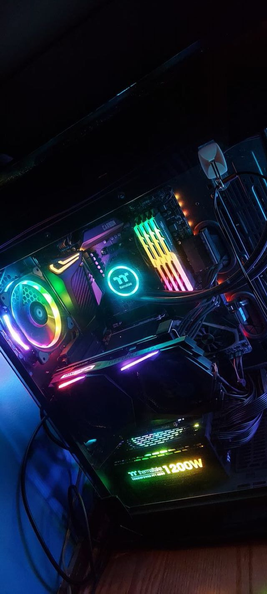

Homelab
Homelab & self-hosting
A personal lab for running services, testing tooling, and learning defensive security hands-on — the best classroom I've found.
$ whoami_
I'm a security engineer focused on defensive security, automation, and making good security practical. I build tools, harden systems, break things on purpose, and write about how it all works.
about
I've been hooked on security since I first figured out how to bend the rules in Minecraft — that itch to understand how systems really work never went away. In 2025 I earned my B.S. in Cybersecurity from Bellevue University, and today I work as an IT Security Engineer, helping protect a large organization and the people who depend on it.
I care about the unglamorous parts of security: solid fundamentals, automation that removes human error, and clear writing that helps others level up. Off the clock you'll find me in my homelab, automating things that arguably didn't need automating, and following where AI/ML is taking the field.
skills & tools
A working toolkit across security, engineering, and infrastructure — the things I reach for to defend, build, and automate.
experience
Defending systems and data at scale — security operations, hardening, and automation that makes the secure path the easy path.
Graduated with a focus on security fundamentals, digital forensics, and the practical side of defending real environments.
selected work
A high-level look — kept deliberately light on internal details.

A personal lab for running services, testing tooling, and learning defensive security hands-on — the best classroom I've found.
A multi-org workflow with hardened defaults and scripts for repo creation, promotion, and auditing — security baked in from commit one.
Small agents and scripts that quietly handle the repetitive stuff, from local events to savings — automation as a daily habit.
Rebuilt and migrated off a paid builder to free, fast static hosting — without touching email. Read the writeup →
writing
How I dropped a $204/year subscription, moved to free static hosting, and kept Mailgun/Proton email flowing the whole time.
read → 2026-06-21Why I rebuilt this site, and what I plan to write about — security notes, homelab adventures, and automation.
read →contact
Questions, ideas, or just want to talk security? Email is best — or find me on the links below.